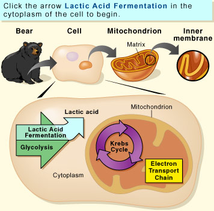

OBJECTIVE: to discover how many ATP molecules are made in fermentation
Sometimes cells do not have enough oxygen for cellular respiration to make all the ATP they need. In that case, many cells add a second process, fermentation, to make more ATP. Play fermentation pinball to see how much ATP fermentation makes.

When you are ready, go to page